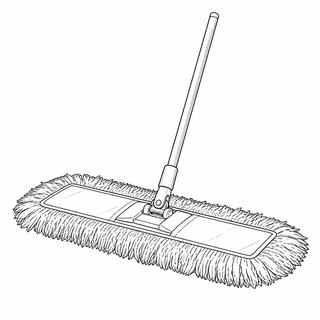

You answered this question incorrectly on August 19, 2026, and you flagged it for review. Reading this explanation does not finish the review — that is confirmed back on the review page.
Technical details
- Session pinned to
- pack v1.8.0
- Downloaded
- pack v2.0.0
Reading your saved session
Your saved answers are coming back exactly as you left them.
Which tool is shown?

Which tool matches these observable features?
- A long, straight handle.
- A swivel yoke where the handle meets the head.
- A wide, flat, rectangular frame at the head.
- Dense soft yarn strands across the whole face of that frame.
- No bristles set into a solid block.
Authored equivalent, not a caption generated from the image. This is a separate task construct and its results are reported separately. Open the illustrated version.
Nothing is saved yet — change your selection as often as you like, then press Save answer.
Your answer was not saved
This device could not finish saving. Nothing was revealed and nothing was recorded.
Change it as often as you like until you submit the session. No outcome, rationale, or source is available for a simulation item before final submission.
{{ outcomeTitle }}
- Your answer
- {{ choiceLabel }}
- Key
- B. Dust mop
Dust mop and wet/string mop are often mistaken for each other. The decisive distinction is frame and head form: a flat frame carrying a yarn face, against strands hanging loose from a central band.
Compare both in the atlasWhy each option is right or wrong
-
{{ r.heading }} {{ r.verdict }}
{{ r.why }}
Sources
Where this comes from: NY Custodian Exam editorial project, reviewed launch tool facts and question blueprints, August 25, 2026.
“Frame/head form and material.”Written by this project’s editorial team, not an official exam source.
The answer is already saved on this device. There is nothing to mark here — a review is finished on the review page, with its own confirmation.
LiveRegion: {{ announce }}